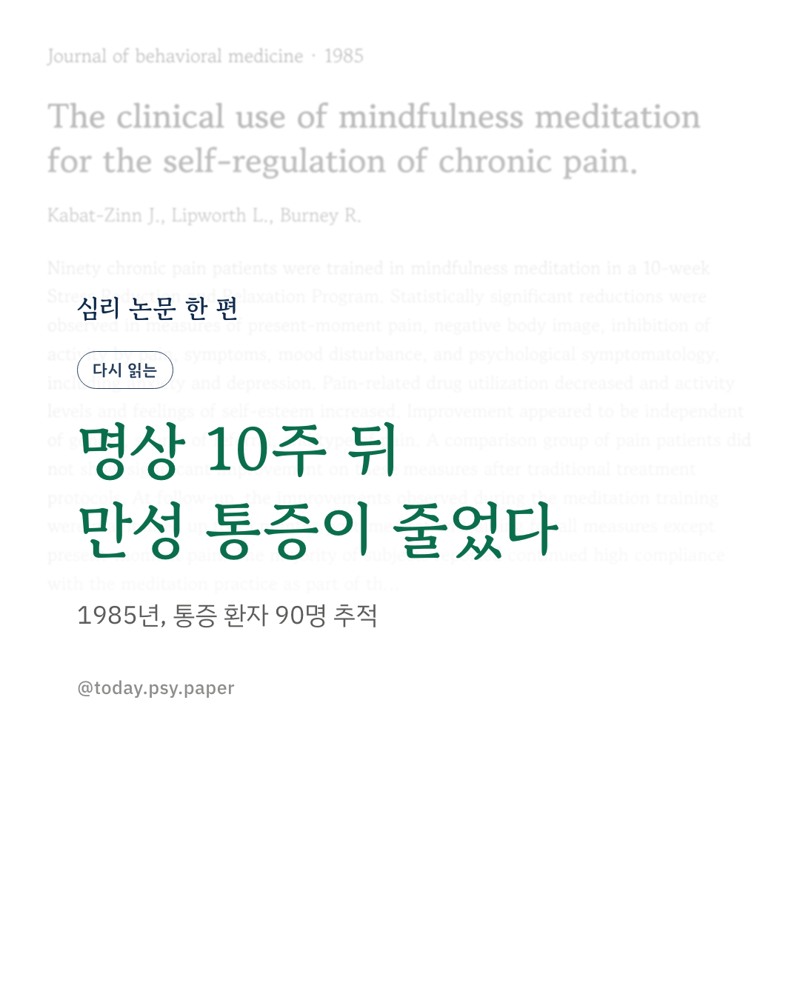
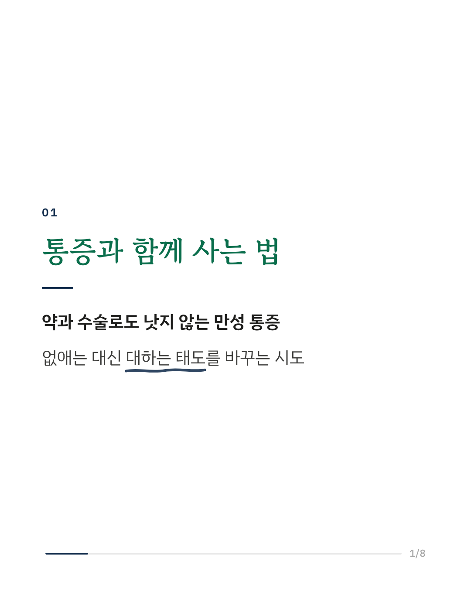
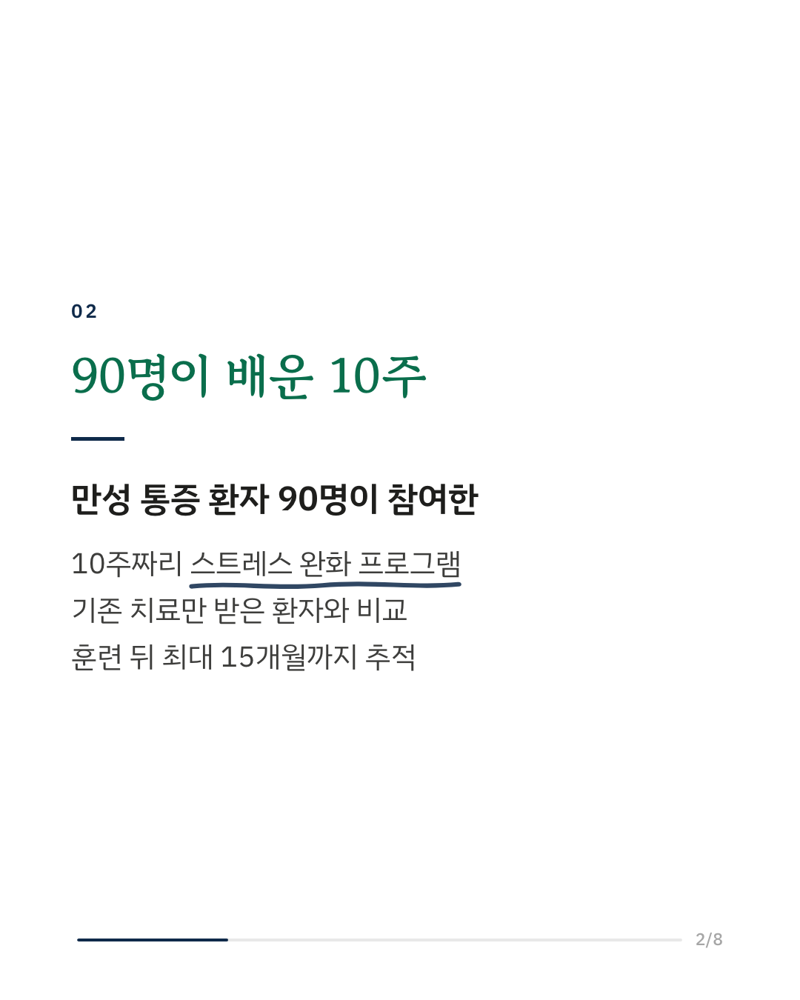
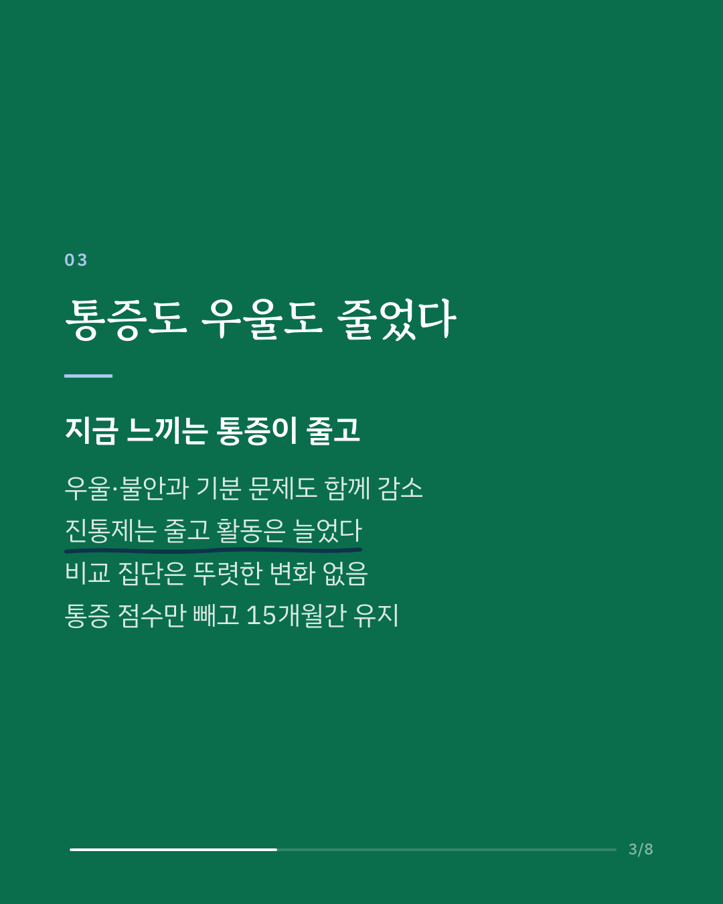
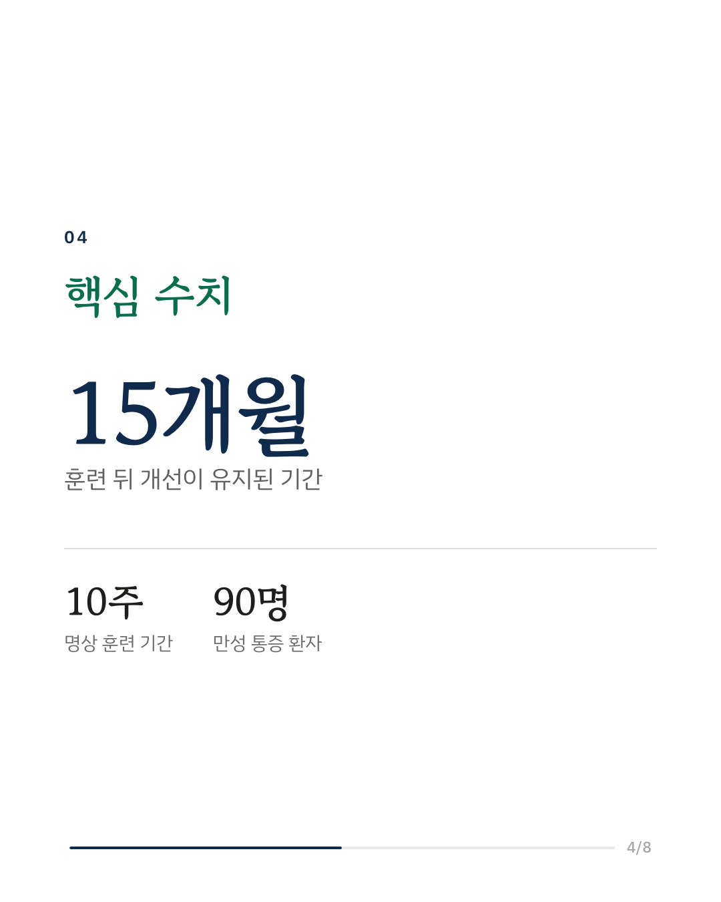
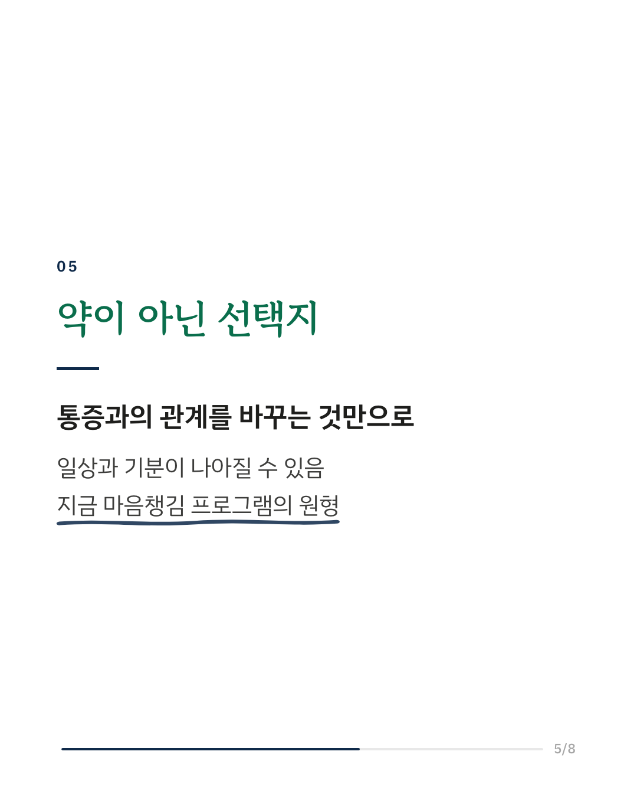
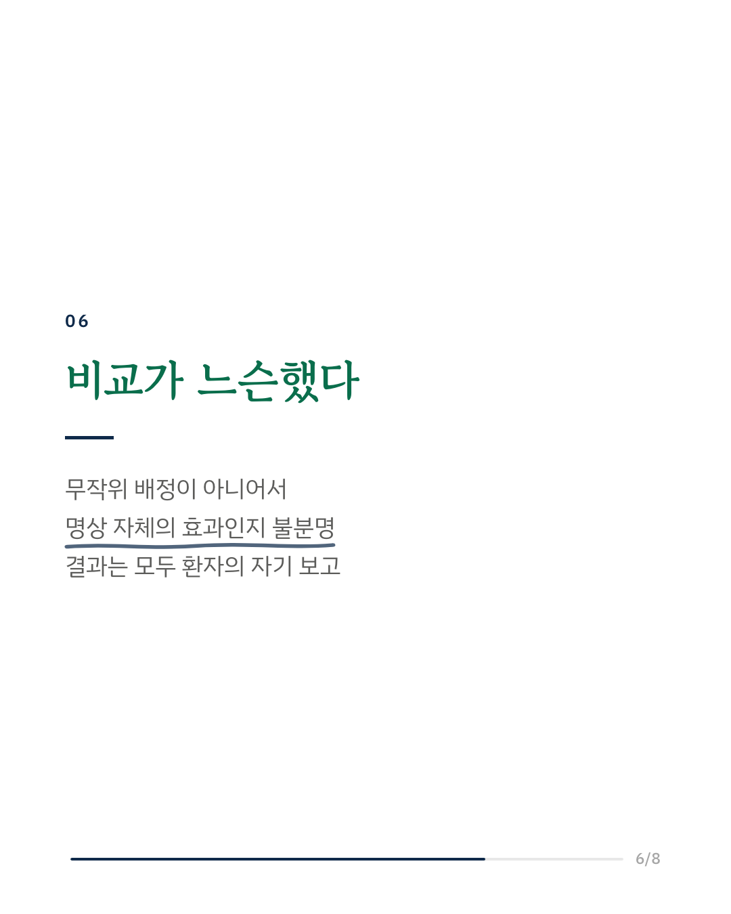
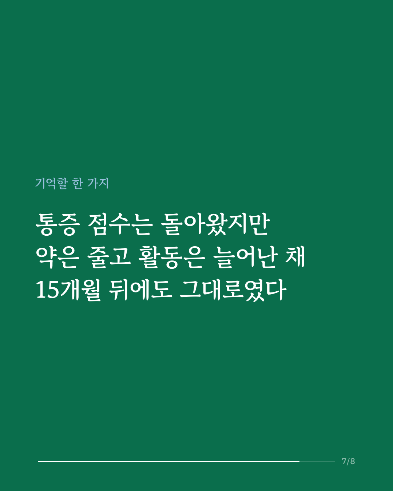
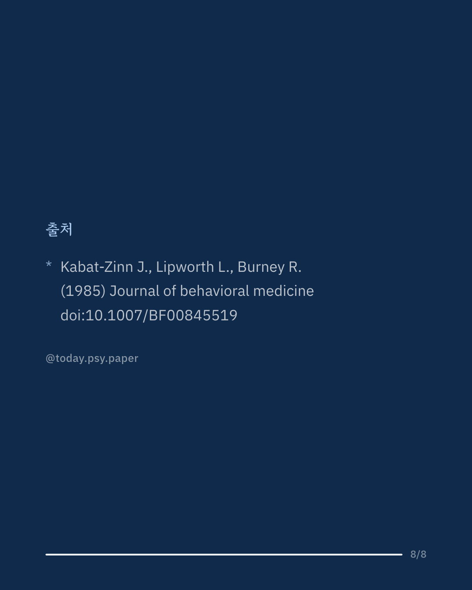

만성 통증에 마음챙김 명상을 적용한 첫 임상 연구를 다시 읽습니다. 1985년 존 카밧진 연구진은 약과 수술로 잘 낫지 않는 통증 환자 90명에게 10주짜리 스트레스 완화 프로그램을 가르쳤습니다. 매주 모여 명상을 배우고 집에서 매일 연습하는 방식으로, 통증을 없애는 대신 통증을 대하는 태도를 바꾸는 데 초점을 두었습니다. 10주 뒤 참가자들은 지금 느끼는 통증, 몸에 대한 부정적 느낌, 통증 때문에 못 하던 활동, 우울과 불안이 모두 줄었다고 보고했습니다. 진통제 사용은 줄고 활동량과 자존감은 늘었습니다. 성별이나 통증 종류에 따른 차이는 없었고, 같은 기간 기존 치료만 받은 비교 집단에서는 뚜렷한 변화가 나타나지 않았습니다. 훈련이 끝난 뒤 15개월까지 추적했을 때 현재 통증 점수만 다시 올라갔고, 나머지 개선은 유지되었습니다. 대부분은 명상을 일상에서 계속하고 있었습니다. 이 연구는 오늘날 병원과 상담실에서 널리 쓰이는 마음챙김 기반 스트레스 감소 프로그램의 출발점이 되었습니다. 다만 참가자를 무작위로 나누지 않아, 개선이 명상 자체의 효과인지 프로그램에 참여했다는 기대와 관심의 효과인지는 구분하기 어렵습니다. 결과도 모두 환자가 스스로 적은 설문에 기대고 있습니다. Journal of Behavioral Medicine (1985), 'The clinical use of mindfulness meditation for the self-regulation of chronic pain' DOI: 10.1007/BF00845519 #임상심리 #정신건강정보 #심리학연구 #논문리뷰 #만성통증 #마음챙김 #명상 #통증관리
python3 publish.py 3897551